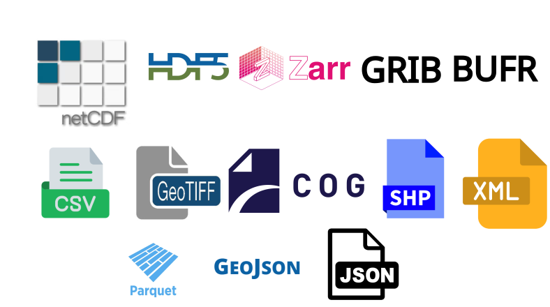
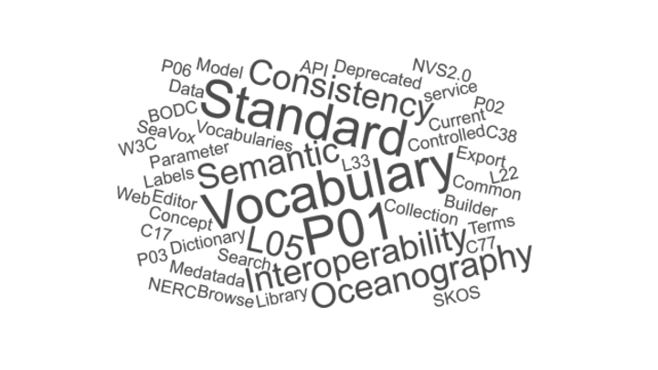
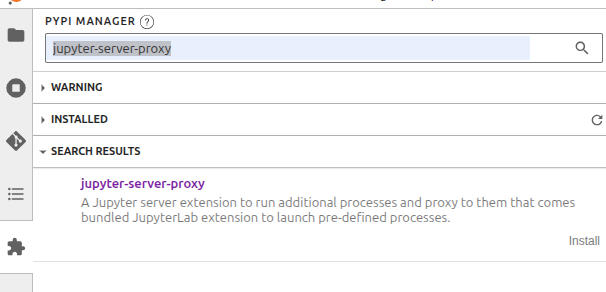
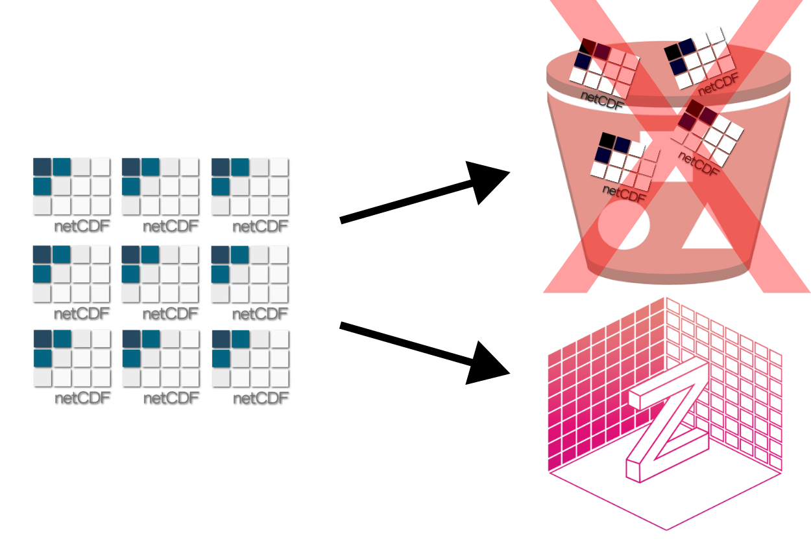
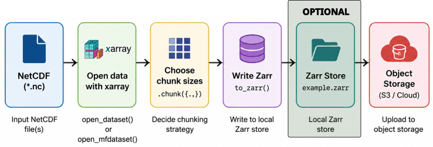
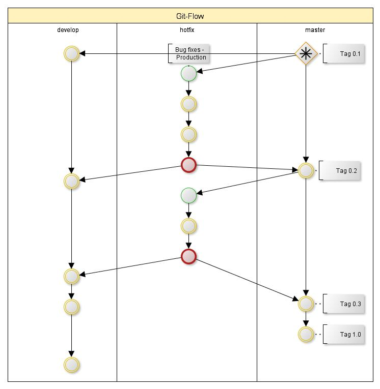
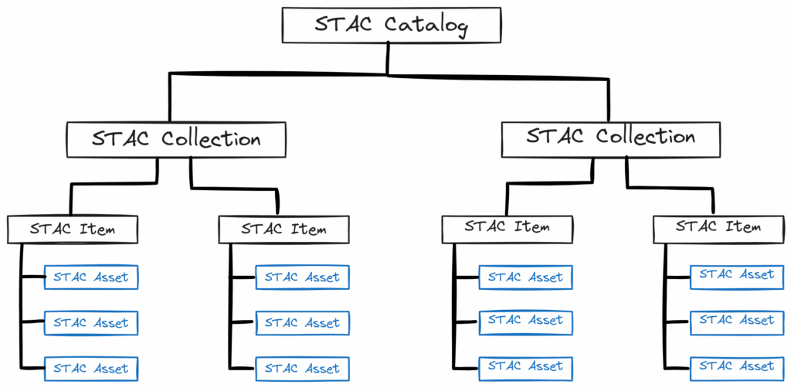
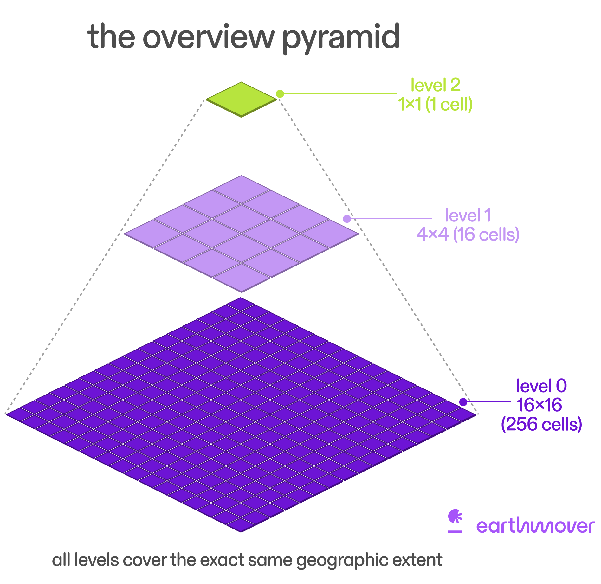
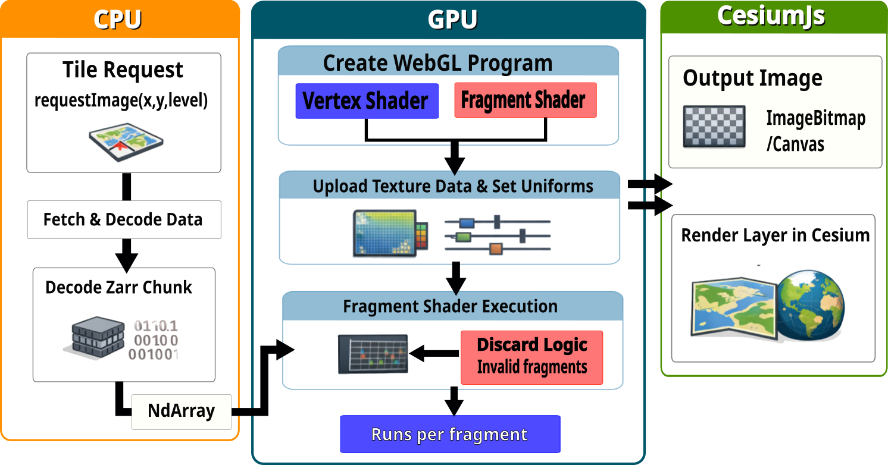
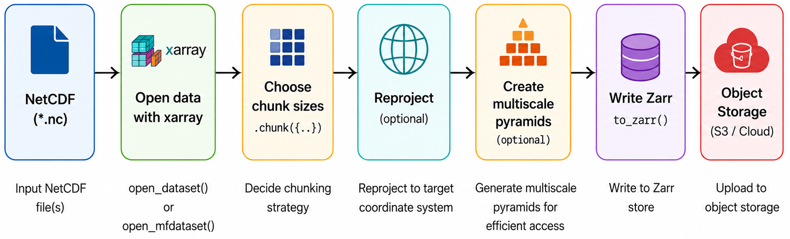

All Images
Image 1 of 1: ‘Common file formats in environmental data, including NetCDF, HDF5, Zarr, GRIB, BUFR, GeoTIFF, GeoJSON, Shapefile, Parquet/GeoParquet, and CSV.’

Image 1 of 1: ‘Word cloud of common metadata elements, including title, abstract, keywords, contact, spatial extent, temporal extent, units, standard_name, cell_methods, coordinates, bounds, grid_mapping, quality flags, provenance.’

Image 1 of 1: ‘Schematic showing a 3D field (latitude, longitude, height) evolving over time, with multiple ensemble members.’

Image 1 of 1: ‘Chart showing the growth of climate data volumes over time, with a steep increase in the last decades.’

The volume of worldwide climate data is
expanding rapidly
Image 1 of 1: ‘Zarr organisation, showing groups and arrays with chunked storage.’

Image 1 of 1: ‘Zarr V2 metadata structure, showing .zgroup, .zarray, and .zattrs files.’

Image 1 of 1: ‘Zarr V3 metadata structure, showing zarr.json files’

Image 1 of 1: ‘Effect of chunking on data access.’

How chunking affects data access.
Image 1 of 1: ‘Xarray logo.’

Image 1 of 1: ‘Zarr dataset opened in Xarray.’

Image 1 of 1: ‘Diagram showing how different chunking strategies affect performance for different workloads.’

Image 1 of 1: ‘A sharded Zarr showing how chunk data is grouped into shard files.’

Image 1 of 1: ‘Diagram showing parallel vs serial processing.’

Image 1 of 1: ‘Dask setup showing a local cluster with one worker and four threads.’

Dask Setup
Image 1 of 1: ‘Dask dashboard showing task progress and worker status.’

Dask dashboard graph view
Image 1 of 1: ‘Dask dashboard showing task progress and worker status.’

Dask dashboard task view
Image 1 of 1: ‘Jupyter server proxy extension for accessing the Dask dashboard on JASMIN.’

Image 1 of 1: ‘Dask task graph showing the dependencies of tasks for performing calculations in a variable.’

Dask task graph
Image 1 of 1: ‘Temperature at 2 meters above the surface from ECMWF AIFS SINGLE dataset.’

Image 1 of 1: ‘Sofar Spotter drifters deployed by Brazilian Navy and INPE, in partnership with Sofar Ocean’

Sofar Spotter drifters deployed by Brazilian
Navy and INPE, in partnership with Sofar Ocean
Image 1 of 1: ‘Array of spotter buoys’

Array of spotter buoys
Image 1 of 1: ‘Incomplete Array representation’

Incomplete Array representation
Image 1 of 1: ‘Ragged Array structure’

Ragged Array structure
Image 1 of 1: ‘Trajectory of SPOT-0164’

Trajectory of SPOT-0164
Image 1 of 1: ‘File vs Object Storage.’

Image 1 of 1: ‘Cloud Object Storage Architecture.’

Cloud Object Storage Architecture
Image 1 of 1: ‘Traditional workflows vs New workflows.’

Traditional workflows vs New workflows
Image 1 of 1: ‘NetCDF needs to be converted to Zarr for cloud-native workflows.’

Image 1 of 1: ‘Pipeline diagram from NetCDF ingest to chunking, Zarr writing, validation, and cloud publication.’

NetCDF-to-Zarr conversion should include chunk
design, validation, and publishing checkpoints.
Image 1 of 1: ‘Zarr without Icechunk.’

Image 1 of 1: ‘Happy, sad and mix sharks!’
Image 1 of 1: ‘Git Workflow, which is similar to Icechunk Workflow.’

Image 1 of 1: ‘An illustration NetCDF files trying to looking like a Zarr Store.’
Image 1 of 1: ‘STAC organisation diagram showing Catalog, Collection, Item, and Asset relationships.’

Image 1 of 1: ‘Diagram showing a multiscale pyramid with multiple levels of downsampled data, each level with its own group in the Zarr hierarchy.’

Image 1 of 1: ‘Diagram showing the workflow for visualising a multiscale Zarr dataset in the browser using zarr-cesium.’

Image 1 of 1: ‘Pipeline diagram showing the conversion of a NetCDF dataset to a multiscale Zarr pyramid using Topozarr.’
